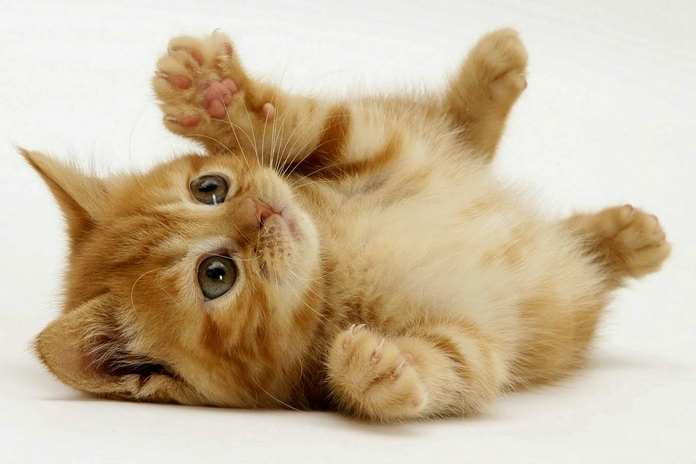

Kucing Takut Timun, Mitos atau Fakta? Published 5 months ago5 min read4 comments  Mungkin sebagian dari kita pernah melihat video-video pendek yang beredar di sosial media atau Youtube. Video pendek ini memperlihatkan seorang pemelihara kucing yang menakut-nakuti kucingnya dengan sebuah timun. Sang pemilik pun meng-upload video tersebut di sosial medianya. Jika kamu pernah melihat video itu, pasti kamu akan tahu apa saja hal yang terjadi di dalam video tersebut. Video itu pun menjadi viral di Youtube dan sosial meida. Video yang menunjukkan kucing takut dengan timun membuat orang bertanya-tanya kenapa bisa kucing takut timun? Mungkin bagi kamu yang punya kucing ikut penasaran. Apakah kucing mempunyai alergi tertentu yang dapat menyebabkan dia takut pada timun atau mungkin ada penyebab lainnya? Dugaan awal ialah karena kucing merupakan hewan karnivora sehingga tentu saja tidak suka dengan timun. Sebab, sayuran bukanlah makanan pokok hewan karnivora seperti kucing. Dugaan selanjutnya yaitu karena kucing alergi terhadap timun. Mungkin saja si kucing pernah mengalami trauma akibat timun atau kesakitan saat memakan timun. Sejumlah ahli hewan pun akhirnya berpendapat tentang alasan kucing takut timun. Menurut Jill Goodman, seorang ahli behavioristik mengatakan, si meong merasa terkejut dan reflek. Menurutnya, perbuatan dari pemilik kucing yang mengagetkan kucing dengan menggunakan timun itu tidak baik untuk perilaku kucing kedepannya. Beliau yang merupakan seorang ahli behavioristik dari University of Bristol ini beranggapan bahwa yang menyebabkan kucing ketakutan adalah sebuah respon alami yang akan dilakukan oleh kucing saat ada benda yang membuatnya kaget. Warna timun yang hijau itu mungkin dianggap sebagai ular yang berbahaya baginya. Jadi, itulah alasan mengapa kucing takut dengan timun. IFL Science turut memberikan pendapat bahwa sebenarnya respon kucing itu bukanlah pertanda bahwa kucing takut dengan timun. kucing merasa kaget dan aneh akan sesuatu yang berda di sekitarnya secara tiba-tiba. Kejadian tersebut bukan hanya terjadi pada timun saja, namun untuk apapun yang sifatnya aneh dan tiba-tiba bagi si kucing. Seorang dokter spesialis, Dr. Roger Mugford juga mneyatakan bahwa reaksi kucing tersebut bisa terjadi karena si kucing tidak berekspektasi bahwa ada timun di belakanganya. Sebab, kucing itu sangat fokus pada apa yang ada di depannya. Designed with by Dewi Sitha for developers Choose Colour